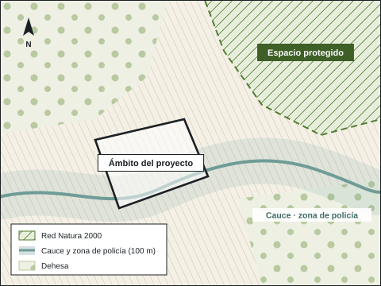

Estudios de impacto ambiental
Muchos proyectos tienen que pasar una evaluación ambiental antes de hacerse. Según el caso, hay que presentar un documento ambiental o, en la evaluación ordinaria, un estudio de impacto ambiental. Los estudios los redactamos a partir del terreno y su cartografía, que es lo que mejor conocemos.

Cómo es el trámite en Extremadura
La Ley 16/2015 de Extremadura, junto con la Ley 21/2013 estatal, fija qué proyectos necesitan evaluación ambiental y de qué tipo, según la clase de proyecto, su tamaño y el lugar.
Evaluación simplificada
El promotor presenta un documento ambiental. El órgano ambiental hace sus consultas y tiene tres meses, desde que recibe la solicitud completa, para emitir el informe de impacto ambiental. Si pasan los tres meses sin respuesta, eso no equivale a un informe favorable. Si ve efectos significativos, el proyecto pasa a la ordinaria.
Evaluación ordinaria
Se presenta un estudio de impacto ambiental, que se somete a información pública y a consultas, y el trámite termina con la declaración de impacto ambiental.
Qué lleva un estudio de impacto ambiental
- Las alternativas del proyecto, incluida la de no hacerlo.
- El inventario ambiental de la zona.
- La valoración de los impactos y las medidas para evitarlos o corregirlos.
- Un programa de vigilancia ambiental.
- Un resumen sin tecnicismos, para quien no es especialista.
Un ejemplo de lo que se mira: si el proyecto está cerca de un río o un arroyo, los 100 metros a cada lado del cauce son zona de policía, y para hacer obras en ella hace falta autorización del organismo de cuenca, la confederación hidrográfica.
¿Tiene un proyecto en marcha?
Cuéntenos qué proyecto es y dónde está y, si los tiene, mándenos los planos. Le diremos qué documentación hace falta y le pasaremos presupuesto.
- emiliocontadorbrito@gmail.com
- Calle Matilde Tagle Ortiz, 28, 5.º D, 06006 Badajoz